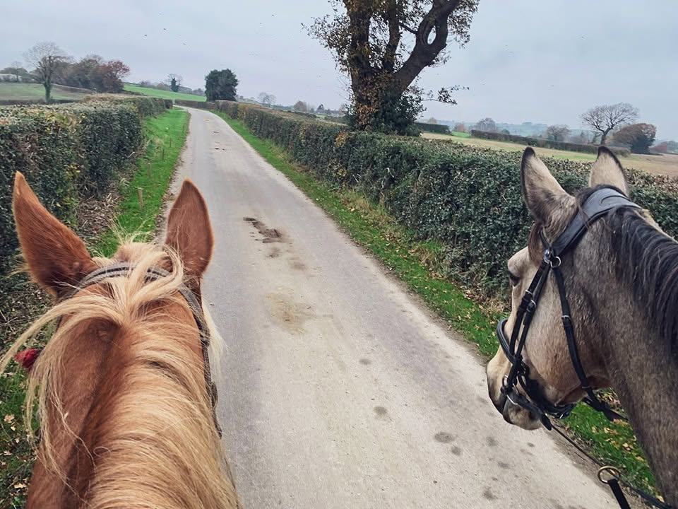

Who’s behind it
BridleNav is made by Charlotte Lowe at Unthank Hall Farm in Holmesfield, on the edge of the Peak District, where she farms and runs guided rides through Leading Ladies Equestrian.
It started because riders kept getting lost on bridleways she knew by heart — and because there was no way to hand that knowledge over without riding alongside them.
Every route carries the sort of detail you only get from someone who has actually stood at that gate.

More about BridleNav